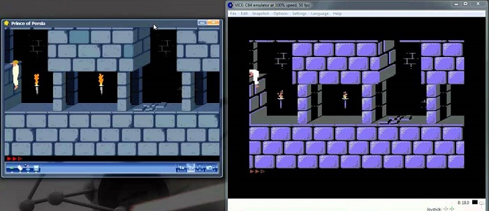
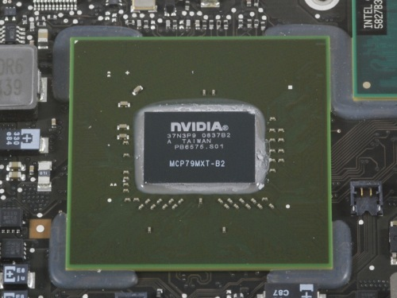

Introducción
Las tarjetas gráficas, también llamadas GPU, son un tipo de tarjeta de expansión o circuito integrado que se encargan de traducir los datos que envía el microprocesador y transformarlos en un formato visible por el usuario a traves del dispositivo de salida, ya sea un monitor o un televisor, en forma de imagenes compuestas por millones de píxeles.
Historia de las tarjetas gráficas
A finales de los 60, cuando se empiezan a usar los monitores como el principal elemnto de visualización de datos a favor de las impresoras, se crearon los primeros chips gráficos como el Motorola 6845, en este momento, solo eran capazes de mostrar imágenes monocromáticas de 40 x 25 píxeles.
Con el éxito de los ordenadores domésticos y el consequente abaratamiento del mismo, gracias a su producción en masa, empezaron varias compañias a competir en la creación de los mismos, con ordenadores como Commodore, Amiga 2000 y Apple Macintosh. Éstos ordenadores integraban la GPU en la placa base,en la gran mayoría de los casos estas GPU estaban hechas con tecnología propietaria, llevando a una gran disparidad de como se mostraban la imagenes entre ellos. Esta situación se mantuvo hasta la aparición del puerto PCI, eliminando el cuello de botella de los puertos ISA, permitiendo la instalacion de tarjetas dedicadas a gráficos aparte de las ya integradas.
En 1995 aparecieron las primeras tarjetas gráficas que manejaban tanto gráficos 2D como 3D fabricadas por Matrox, ATI, S3 y Creative entre otros. Cumplían con el estándar SVGA pero con algunas funciones 3D.
En el año 1997, 3DFX lanzó una de las tarjetas gráficas dedicadas solo en la producción de imágenes en 3D: Voodoo. Ésta tenía una potencia considerable para la época y añadía diversos efectos 3D como Mip Mapping, Z-Buffering y Antialiasing. A partir de ésta, se lanzaron diversos modelos como el Voodoo2 de 3DFX, TNT de Riva y después, el TNT2 de NVIDIA (después de que NVIDIA adquiriera la compañia Riva).

Tal era la potencia de esas gráficas que el puerto PCI se convirtió en un cuello de botella, por lo cual Intel desarrolló el puerto AGP (Accelerated Graphics Port) el cual podía soportar la potencia de estas tarjetas.
Entre 1999 y 2002, NVIDIA se hizo con la hegemonía del mercado de tarjetas gráficas,comprando a 3DFX,la cual solo en 6 años de su creación estaba ya sufriendo grandes problemas financieros, y consolidando esta hegemonía con su popular familia de tarjetas GeForce. En ese periodo hubo gran cantidad de mejoras gráficas en el entorno 3D. Las gráficas destacadas de aquellos tiempos tenían hasta 128 MB de memoria DDR.
Tipos
Actualmente hay dos tipos de tarjetas gráficas: las tarjetas gráficas integradas directamente en la CPU o las dedicadas en forma de tarjetas de expansión.
Tarjetas gráficas integradas
Las iGPU o gráficas integradas, estan integradas dentro del propio procesador. Estas gráficas integradas tienen una potencia bastante reducida ya que tienen que derivar su potencia del microprocesador, y además necesitan tomar parte de la memoria RAM del sistema para ellas mismas.
En la actualidad, tanto AMD como Intel cuentan con gráficas integradas en sus procesadores. El principal motivo es que los procesadores gráficos son muy potentes a la hora de realizar procesos paralelos, y ubicar la GPU junto con la CPU permite utilizar los gráficos integrados para realizar muchos procesos además del procesamiento de gráficos propiamente dicho.
Tarjetas gráficas dedicadas

Las tarjetas gráficas dedicadas son placas de vídeo que tienen su propia GPU, memoria gráfica(VRAM), salidas de vídeo y sistema de refrigeración, se conectan a la placa base a través de un puerto PCI-Express. Ya que estas no están ligadas al microprocesador, son mucho mas fáciles de sustituir cuando el usuario prefiera y proporcionan un nivel de rendimiento muy superior a los gráficos integrados, pero también son bastante caras si vas en busca de potencias altas.
Funcionamiento
El trabajo que realizan las tarjetas gráficas es algo complejo, pero sus principios y componentes son algo mas fáciles de entender. Ahora se verán los componoentes basicos de estas tarjetas y que función desarrollan.
Para poder crear una imágen en 3D a través de datos binarios hacen falta varios procesos, la tarjeta primero crea un wireframe a través de lineas rectas. Después rasteriza la imágen(rellena los pixeles restantes). Y por ultimo añade luz, texturas y efectos. Para poder crear movimiento, el ordenador tiene que hacer estos procesos varias veces por segundo. Cada imagen final es un "frame" por lo tanto, cuando se dice que un juego va a 60 fps (frames por segundo), se realiza este proceso de construcción de imagenes 60 veces por cada segundo.
Para poder realizar esta tarea, la tarjeta gráfica necesita cuatro componentes.

- Una conexión a la placa base para obtener los datos del microprocesador y para suministrar a la tarjeta de energía.
- Un procesador, la GPU (graphics processing unit) para decidir que hacer con cada pixel de la pantalla. Su potencia se mide en MHz.
- Una memoria (VRAM), para contener información sobre cada pixel y para temporalmente almacenar imagenes ya completadas (frame-buffer). Su potencia se mide en GB actualmente.
Instalación
En la actualidad, es bastante sencillo instalar una tarjeta gráfica en un ordenador de sobremesa, esta se inserta en la ranura de PCI-E x16, y después conectarla a la fuente de alimentación, esta debe de ser lo suficientemente potente como para poder administrar energía suficientemente tanto a la gráfica como al resto de componentes, por último, se debe conectar la tarjeta gráfica a nuestro monitor para que la imagen que se muestra por pantalla venga directamente de la tarjeta gráfica.
Una vez ya esten todas las conexiones hechas, se deben instalar los drivers pertinentes, en el caso de una tarjeta NVIDIA, se descargan los drivers de la página de descargas de NVIDIA:
En el caso de las tarjetas AMD el proceso es basicamente el mismo, se descargan los drivers desde la página de drivers de AMD: https://www.amd.com/es/support.
En caso de que esta información no sea suficiente, aqui se incluye un video tutorial sobre como instalar una tarjeta gráfica GTX 980 Ti de NVIDIA a modo de ejemplo:
Marcas
Desde la contración del mercado durante el final de los 90 hasta ahora la única competición que ha tenido NVIDIA en cuanto a tarjetas gráficas dedicadas, tanto en el ámbito de los ordenadores como en el de las videoconsolas, ha sido ATI, ahora conocida como AMD. Intel ha hablado varias veces en los ultimos años de querer entrar en el mundo de las gráficas dedicadas, pero hasta ahora solo se han dedicado en manufacturar chips gráficos integrados para sus microprocesadores, como el Intel HD graphics 4000.
Compras
Las tarjetas gráficas se pueden encontrar en cualquier tienda dedicada a ordenadores y en vendedores online como amazon o Pccomponentes.
Los precios de las tarjetas de gamas equivalente entre NVIDIA y AMD son:
-Gama baja: NVIDIA GTX 1060 entre 130 y 230 euros/AMD RX 590 entre 170 y 260 euros.
-Gama media: NVIDIA GTX 1070 entre 225 y 550 euros/AMD RX Vega 56 alrededor de 390 euros.
-Gama alta: NVIDIA GTX 1080 entre 450 y 570 euros/ AMD RX Vega 64 alrededor de 480 euros.
Bibliografía
https://hardzone.es/tarjeta-grafica/https://computer.howstuffworks.com/graphics-card.html
https://www.nvidia.com/Download/index.aspx
https://www.amd.com/es/support.